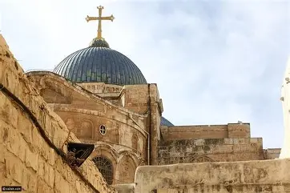
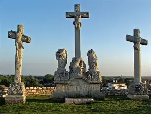
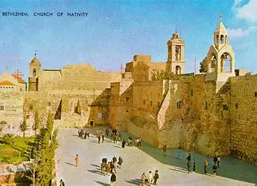
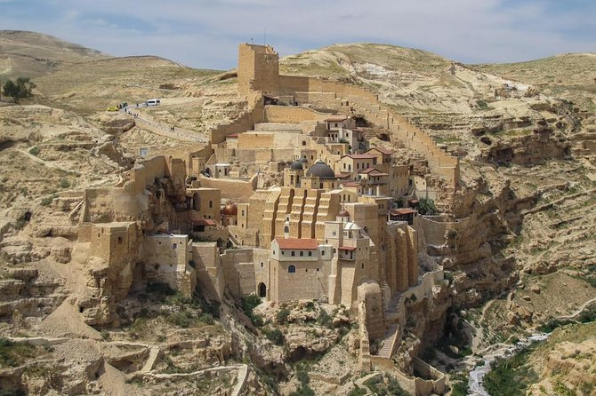

ciuidad del Jerusalén
Jerusalén es un lugar sagrado para los cristianos porque allí vivió y predicó Jesús. En la ciudad se encuentran lugares fundamentales como la Iglesia del Santo Sepulcro. Es el sitio donde, según la tradición cristiana, Jesús fue crucificado y resucitó. Por eso, Jerusalén es un destino central de peregrinación y profunda espiritualidad.

iglisia del qiyama

La Iglesia del Gólgota
ciudad del belen
"La ciudad de Belén es uno de los lugares más sagrados para los cristianos, ya que se considera el lugar de nacimiento de Jesús. Cada año miles de peregrinos visitan la Basílica de la Natividad para conocer el sitio donde, según la tradición, nació Cristo. Belén es un símbolo de fe, historia y espiritualidad para millones de creyentes en todo el mundo."

Iglesia de la Natividad

El Monasterio de Mar Saba
plan del viaje
Dia 1: llegada por la manana a Jerusalén y seguridad en hotel despus iriglisia del qiyama
Dia 2: ir a al La Iglesia del Gólgota y La oración allí y disfruta alli
Dia 3:lledado a belen y ir aIglesia de la Natividad
Dia 4 :ir a El Monasterio de Mar Saba